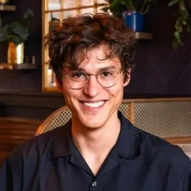
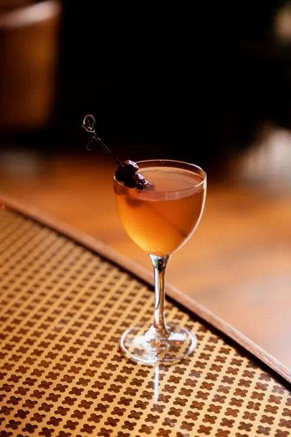

Product · Research · Enterprise Systems
Ryan Critchlow
I turn what people need into scoped, buildable work. Three years running enterprise warehouse-management accounts at Körber, an M.S. in Computer Science, and a research practice in accessible educational technology.
Open to product, solutions, analytics, and accessibility roles. Pacific Northwest or remote.

- 4 enterprise accounts run at once at Körber, double the team average
- 46% more stable releases than the department average
- 50% shorter new-hire ramp from a 30/60/90 onboarding framework I co-led
- 2026 First peer-reviewed paper, at ACM ASSETS in Porto
Selected work
Things I planned, built, and shipped, from a research game to a warehouse simulator.
-
2025–2026
You and I
A Unity game that helps autistic gestalt language learners practice pronouns, built for an in-home participatory evaluation with four families. I owned it end to end, including the art.
Unity · C# · WebGL
-
2026
WMS Simulator
A playable version of the wave, pick, stage, pack, load, and ship flow I administered for three years, including what happens when a picker reaches an empty location.
Svelte · TypeScript
Play the simulator -
2025
KIND Lab website
The site for Western's KIND Lab, built so the group's research is legible to people outside it.
Web development
thekindlab.github.io -
2026
Atlas Northwest
Content and structure work on the site for the woodshop I work at, covering its restoration and millwork portfolio.
Squarespace
atlasnorthwest.com
Work history
Most recent first. The three bullets on each role are the ones I would lead with.
-
Carpenter
Atlas Woodworks
Jan 2026 – present · Bellingham, WA
- Restoration, custom millwork, and casework installation for a worker-owned shop. Part time while finishing my M.S., full time since June 2026.
- Moving into material takeoffs: reading drawings, quantifying materials, and scoping jobs before they reach the floor.
- Took over the shop's Squarespace site, handling content and structure updates.
-
Graduate Researcher
Western Washington University, KIND Lab
Winter 2025 – Jun 2026 · Bellingham, WA
- Designed the full study: literature review, survey instruments, assessment method, and data-collection plan. Mentored an undergraduate through an IRB amendment.
- Ran an in-home participatory evaluation with four neurodivergent children and their families, in sessions averaging 85 minutes.
- Built the prototype in C#, Unity, and WebGL from speech-language pathologist and co-design input, leading implementation and art direction.
2 more from this role
- Managed a multi-phase build, recruit, evaluate, analyze, and write timeline, and re-sequenced phases to absorb a quarter-long recruiting delay.
- Applied Braun and Clarke's inductive thematic coding to caregiver interviews over three rounds, and coded video for emotional engagement cues.
-
Graduate Teaching Assistant
Western Washington University
2024 – 2025 · Bellingham, WA
- Supported 30+ students per quarter across data science, computer-mediated communication, and object-oriented design.
- Rewrote assignment requirements in plainer language and refined rubrics so expectations were clear.
-
Support Analyst L4
Körber Supply Chain (now Infios)
2020 – 2023 · Bellingham, WA
- Ran four enterprise accounts, double the team average, as the primary technical contact for process changes and change control.
- Turned stakeholder requests into custom SQL reporting and web deliverables, with 46% more stable releases than the department average.
- Co-led a 30/60/90 onboarding framework that cut new-hire ramp time by 50%.
7 more from this role
- Re-aligned expectations when requests conflicted with feasibility, contracted hours, or SLAs, and wrote specs for engineering handoff.
- Tuned SQL workloads with CTEs, stored procedures, indexing, and SQL Server Agent, resolving deadlocks on high-traffic systems.
- Isolated faults across the WMS, order management, Dynamics 365, and customer networks, and escalated with evidence.
- Separated platform outages from application faults for cloud-hosted and on-premise customers.
- Ran upgrades across dev, test, and production through the HighJump to Körber rebrand.
- On-site technical lead at two go-lives and one improvement trip.
- Wrote the knowledge base for every account and trained four customers through a NetSuite-to-ServiceNow migration.
Also: bartender at Redlight (2023–2025, to pay for grad school) and Aslan Brewing (2018–2020); carpenter at Bespoke Construction (2015–2017).
Field reports
Accessibility and participatory design research, with the KIND Lab at Western Washington University.
-
Peer-reviewed
Ableism Unchecked: A Literature Review of Disability Misconceptions in Computing Education
ASSETS 2026, Porto, Portugal, October 2026
My contribution
Applied an iteratively developed codebook to all 35 papers in the corpus and helped identify six recurring patterns of ableism. A second researcher reviewed the findings for consistency. My first conference presentation.
-
In preparation
You and I: A Participatory Evaluation Study of a Serious Game to Practice Pronouns for Autistic Children
Targeting IDC 2027, Seattle, WA, June 2027
My contribution
First author. I planned the build, ran recruitment, designed the instruments, ran the in-home sessions, and coded the analysis.
-
In preparation
Motivation Yields Better Alt Text: A Study of Design Triggers that Encourage Authoring Behavior
Target venue to be decided
My contribution
Joined after the original authors graduated and a prior rejection. Revised the discussion, addressed reviewer feedback, and brought the manuscript back to submission readiness.
ORCID 0009-0007-7323-9177 ACM member since 2026
About
I'm interested in the work that happens before the code: figuring out what people need, deciding what gets built, and keeping the thing that ships close to the problem it started with. I've done versions of that as a support analyst, a graduate researcher, and now in a wood shop.
Most of what I know about building for people I learned in the KIND Lab. I scrapped my own approved study design because I had planned it for autistic kids without involving any of them. The replacement put me in four families' living rooms watching them play. It's still the best decision I've made on a project.
Off the clock you'll find me on a trail with Georgia, training for the next half marathon, out on the road bike, or behind a bar making cocktails.

Tool chest
Product and research
- Requirements gathering and stakeholder management
- Prioritization, scope, and change control
- User interviews, survey design, and thematic analysis
- Participatory design and IRB protocols
- WCAG 2.2 accessibility
Data and code
- T-SQL, MySQL, Python
- Power BI, Tableau
- C#, Unity, Java, JavaScript
- Svelte, Tailwind, Git
Education
M.S. Computer Science, 2026
Western Washington University. HCI, accessible educational technology, participatory design. Advisor: Dr. Yasmine Elglaly.
B.A. Management of Information Systems, 2020
Western Washington University. Minor in Data Analytics.